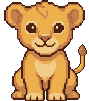

🔧 UNDER THE HOODThe same stop in a developer's words: for instructors and anyone who likes to see how it works.
🎉 You walked the whole trail. Todah is proud of you. 🦁
The left and right arrow keys walk the trail too.
How a 16-bit career adventure got built, one stop at a time. Walk it in order, or click any stop on the trail. Developers: every stop has an under the hood flap.

🎉 You walked the whole trail. Todah is proud of you. 🦁
The left and right arrow keys walk the trail too.